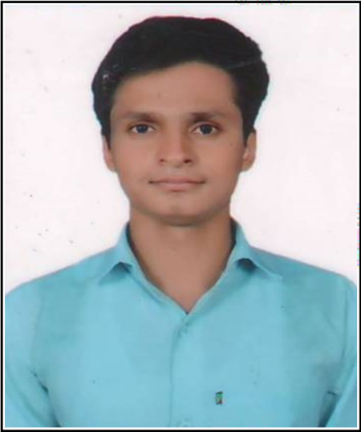

Raj Kumar Yadav
Puttur, Tirupati, Andhra Pradesh | 9142324784 | rajkumar08bgh@gmail.com

Objective
Pursuing B.Tech in Computer Science and Engineering. Adaptable student with
diverse skill sets
(Python, HTML5, CSS3, Javascript, Java, SQL) and seeking an internship
opportunity to use recently
learned skills in real world setting and contribute to
company’s success.
Education
B.Tech in Computer Science and Engineering
Siddartha Institute of Science and Technology, Puttur, AP
CGPA – 9.68 (upto fourth semester)
2021-2025
Class 12th, Bihar School of Examination Board
College of Commerce Art and Science, Patna, Bihar
Percentage- 87.4%
2018-2020
Class 10th, Central Board of Secondary Education
M S Memorial Public School, Motihari, Bihar
Percentage- 89.2%
2016-2018
Technical Skills
- C, Java, Python
- DBMS(SQL, PLSQL)
- HTML5, CSS3, Javascript
- Node.js, REST API, Flask
Soft Skills
- Adaptability
- Teamwork
- Time Management
- Leadership
- Confidence
Certifications
- Python Programming- For every beginners – Udemy
- 100 Days of Code: The Complete Python Pro Bootcamp for 2023 – Udemy.
- The Complete 2023 Web Development Bootcamp – Udemy.
- Earned certificates of participation in many events conducted by NDLI Club.
Awards and Achievements
- Attained first prize for the excellence in Academics in 1st &2nd year B.Tech.
- Awarded certificate of participation in 2 days National Level Technical Expo
“AAVEG’22”
conducted at Annamacharya Institute of Technology &Sciences, Tirupati.
- Achieved 3rd rank in English Literary Club Project Presentation.
- Succeeded in achieving 2nd rank in Department’s Association events.
Training and Workshops
- Attended 20 days soft skills training at Q-Spiders.
- Attended 20 days C Programming training at Q-Spiders
- Attended two weeks workshop on Visual Effects-VFX (Adobe Photoshop).
- Completed two weeks workshop on Animation Design (Blender)
- Participated in IP Awareness/Training Program under National Intellectual Property
Mission.
Mini Projects
- Sname Game using Python Turtle.
- Password Manager using Python Tkinter
- Pong game and Black Jack game
Language Proficiencey
General Information
- Hobbies: Playing Cricket, Listening Music
- DOB: 29/11/2003
- Nationality: Indian